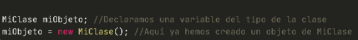
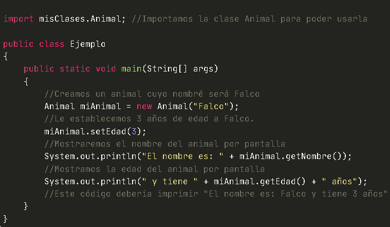
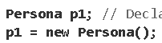

Se trata de un ente abstracto usado en programación que permite separar los diferentes componentes de un programa, simplificando así su elaboración, depuración y posteriores mejoras.
Los objetos integran, a diferencia de los métodos procedurales, tanto los procedimientos como las variables y datos referentes al objeto.
En el paradigma de programación orientada a objetos: un objeto es un ente orientado a objetos que consta de un estado y de un comportamiento, que a su vez constan respectivamente de datos almacenados y de tareas realizables durante el tiempo de ejecución.
Vamos a crear un objeto o instancia en Java para la clase que hemos llamado MiClase. Esta clase tiene un constructor que no recibe parámetros, por lo cual no es necesario enviar algún tipo de valor al momento de crear el objeto, veamos entonces la sintaxis para crear un objeto del tipo MiClase en java.
Vamos ahora a crear un objeto o instancia para la clase Animal (la del ejemplo dos), en esta ocasión tenemos un constructor que recibe un parámetro (el nombre del animal) y que posee tres métodos de los cuales haremos uso para este ejemplo.
Ya que sabemos lo que es un objeto ahora bien vamos a plasmarlo en programación
en este caso utilizaremos el lenguaje más conocido como java.
Los objetos en Java no tienen existencia física, no puedes tocarlos, pero sí que existe como algo que contiene información sobre sí mismo y sobre su estado. Se puede interactuar con él, y se puede modificar para que responda a nuestras necesidades de programación.
Ahora bien les estaremos enseñando paso a paso como pueden crear un objeto desde el inicio del codigo
empezamos por crear la clase la cual va a estar nuestro objeto llamado persona
Obsérvese que, en el cuerpo de la clase entre las llaves {} se han definido:
2 atributos también llamados campos, privados (private): nombre y edad.
Para declarar y crear un objeto de la clase Persona se puede escribir
También, se puede indicar lo mismo en una sola línea: